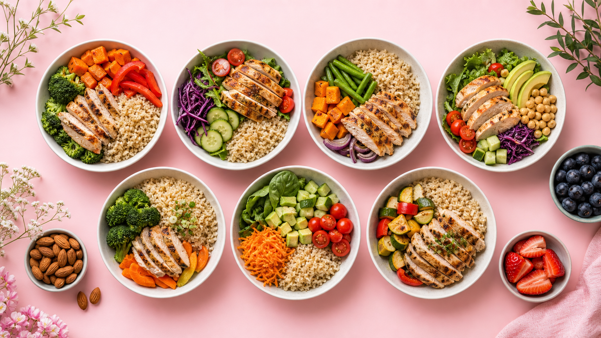

1週間のダイエット献立、何から始めればいい？
「何を食べればいいかわからない」「毎日考えるのが面倒」——そんな悩みを解決するのが1週間分の献立を先に決めてしまう方法です。
食事の約70%が体型に影響すると言われています。運動よりも先に食事を整えることが、ダイエット成功への近道です。
この記事では、月曜〜日曜の朝・昼・夜のメニューを具体的に紹介します。買い物リストも作りやすい構成にしているので、そのまま実践できます。
ダイエット献立を作る3つの基本ルール
① 1食あたりのカロリーの目安を知る
成人女性の1日の摂取カロリー目安は約1,400〜1,800kcal（活動量により異なります）。ダイエット中は1日1,400〜1,600kcalを目安にすると、無理なく調整しやすくなります。
② PFCバランスを意識する
たんぱく質（P）・脂質（F）・炭水化物（C）のバランスが大切です。目安はP：20% / F：25% / C：55%。たんぱく質をしっかり摂ることで筋肉を守りながら体脂肪を減らしやすくなります。
③ 食材を使い回して「献立疲れ」を防ぐ
同じ食材を複数の料理に使い回すと、買い物が楽になり食材ロスも減ります。鶏むね肉・豆腐・ブロッコリーは特に使い勝手が良いのでおすすめです。
📅 1週間ダイエット献立プラン｜朝・昼・夜の具体的メニュー
👇 横にスクロールして全曜日を確認できます
| 曜日 | 🌅 朝食 | ☀️ 昼食 | 🌙 夕食 | 目安kcal |
|---|---|---|---|---|
| 月 | ゆで卵2個 野菜スープ 全粒粉トースト1枚 |
鶏むね肉の サラダチキン丼 （玄米100g） |
豆腐と野菜の 味噌汁 焼き魚（鮭） |
約1,450kcal |
| 火 | オートミール （豆乳150ml） バナナ½本 |
もずくそば （温かいつゆで） ゆで卵1個 |
鶏むね肉の レモン蒸し ブロッコリー添え |
約1,400kcal |
| 水 | 全粒粉トースト アボカド½個 無糖ヨーグルト |
サバ缶と キャベツの和え物 玄米おにぎり1個 |
豆腐と きのこの鍋 （ポン酢で） |
約1,420kcal |
| 木 | スクランブルエッグ トマト1個 豆乳100ml |
ツナと ひじきの混ぜご飯 （玄米100g） |
タラのホイル焼き ほうれん草の おひたし |
約1,430kcal |
| 金 | オートミール （豆乳＋きな粉） いちご5粒 |
鶏むね肉の 棒棒鶏サラダ 玄米おにぎり1個 |
豚ヒレ肉の 生姜焼き キャベツ千切り |
約1,480kcal |
| 土 | 野菜オムレツ 全粒粉トースト 無糖ヨーグルト |
鶏がらスープの 野菜ラーメン （こんにゃく麺） |
鮭のムニエル 蒸し野菜盛り合わせ 玄米100g |
約1,500kcal |
| 日 | オートミール パンケーキ （はちみつ少量） |
作り置き チキンと野菜の カレー（玄米） |
豆腐ハンバーグ ブロッコリー コンソメスープ |
約1,520kcal |
曜日別ポイント解説
月〜水：基礎をしっかり固める3日間
週の前半は鶏むね肉・豆腐・魚を中心に、たんぱく質をしっかり確保します。玄米を主食にすることで血糖値の急上昇を抑え、腹持ちも良くなります。
木〜金：食材を使い回してラクに継続
月〜水で買った食材を上手に使い回します。サバ缶・ツナ缶などの缶詰を活用すると調理時間が10分以内に収まります。
土〜日：少し楽しみを取り入れてリフレッシュ
週末は少しだけ食事を楽しむ日にしましょう。こんにゃく麺やオートミールパンケーキなど、食べ応えがあって満足感の高いメニューを取り入れると、ストレスなく続けられます。
ダイエット中の食事で意識したい5つのポイント
1. 野菜から食べ始める「ベジファースト」
食事の最初に野菜を食べると、血糖値の上昇がゆるやかになります。サラダや汁物を先に食べる習慣をつけましょう。
2. 夜20時以降は食べない
夜遅い食事は脂肪になりやすいと言われています。どうしても遅くなる日は、夜は軽めにして翌朝にしっかり食べる「朝型食事」にシフトしてみましょう。
3. 間食は「ナッツ・チーズ・ゆで卵」から選ぶ
どうしても間食したいときは、たんぱく質や良質な脂質を含む食品を選びましょう。ナッツ（素焼き）20g・チーズ1切れ・ゆで卵1個が定番です。
4. 水分は1日1.5〜2L
水分不足は代謝の低下につながります。食事以外でも、こまめに水や無糖のお茶を飲む習慣をつけましょう。
5. 週1回は「チートデイ」ではなく「ゆるめデイ」を
完全に食事制限を解除するのではなく、好きなものを1品だけ追加する「ゆるめデイ」を設けると、ストレスが溜まりにくくなります。
1週間献立の買い物リスト（まとめ買いOK）
以下の食材を週の始めにまとめ買いしておくと、毎日の献立作りがスムーズになります。
- 🐔 鶏むね肉：400〜500g
- 🐟 鮭・タラ・サバ缶：各1〜2パック
- 🥚 卵：10個パック
- 🫘 豆腐（絹・木綿）：各1丁
- 🥦 ブロッコリー：1株
- 🥬 キャベツ：½玉
- 🍄 きのこ類（しめじ・えのき）：各1袋
- 🌾 玄米・オートミール：各200g
- 🥛 無調整豆乳：1L
- 🫙 無糖ヨーグルト：400g
これらの食材でほぼ1週間の献立が完成します。食事管理の記事一覧も参考にしながら、自分に合ったアレンジを加えてみてください。
よくある質問（FAQ）
Q. 1週間の献立を続けると何kg痩せますか？
個人差があるため「必ず〇kg痩せる」とは言えませんが、1日の摂取カロリーを消費カロリーより200〜300kcal少なくすることで、1ヶ月で約1〜2kgのペースで体重が変化しやすくなります。急激な制限よりも、無理なく続けられる食事量を見つけることが大切です。
Q. 外食が多い日はどうすればいいですか？
外食の日は「定食スタイル」を選ぶのがおすすめです。焼き魚定食・鶏肉の定食など、主食・主菜・副菜が揃ったメニューを選びましょう。揚げ物は1品まで、ご飯は少なめにするだけでもカロリーを抑えやすくなります。外食後の翌日は野菜多めの食事にして調整するのも効果的です。
Q. 玄米が苦手な場合、何に変えればいいですか？
玄米が苦手な方は「白米＋もち麦（3割混ぜ）」や「雑穀米」に変えるのがおすすめです。食物繊維と血糖値の上昇を抑える効果は玄米に近く、食べやすさがアップします。こんにゃく米を白米に混ぜる方法もカロリーを抑えやすいのでお試しください。